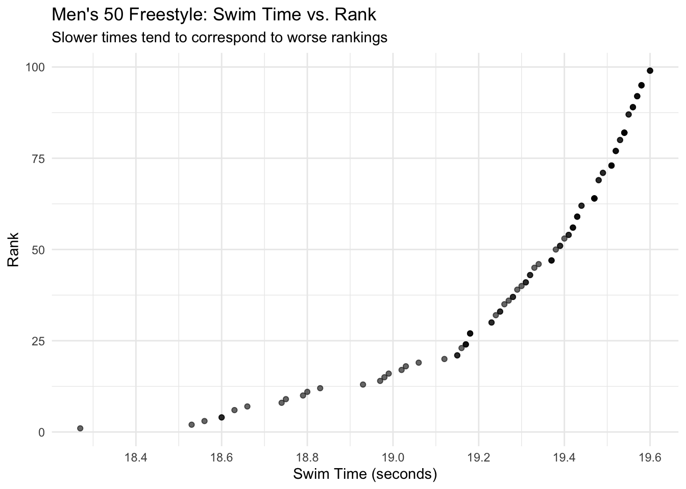
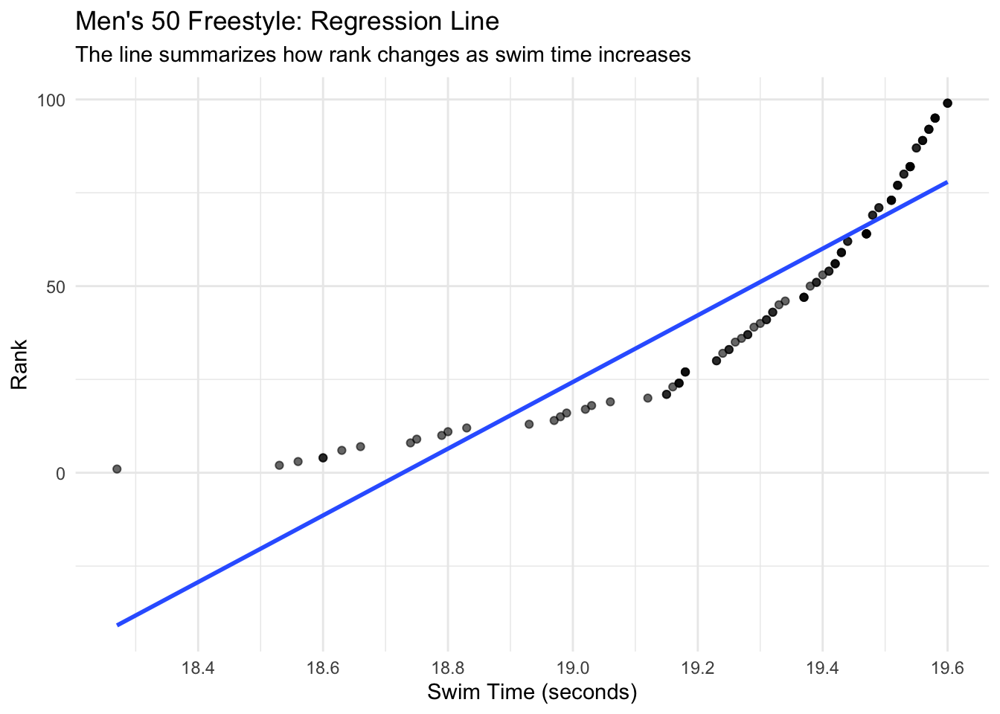

# A tibble: 101 × 5
Event Swimmer Sex Swim_Time Rank
<chr> <chr> <chr> <dbl> <dbl>
1 50 Freestyle SCY Male Seeliger, Bjorn M 18.3 1
2 50 Freestyle SCY Male Crooks, Jordan M 18.5 2
3 50 Freestyle SCY Male Curry, Brooks M 18.6 3
4 50 Freestyle SCY Male Brownstead, Matt M 18.6 4
5 50 Freestyle SCY Male Kibler, Drew M 18.6 4
6 50 Freestyle SCY Male Auchinachie, Cameron M 18.6 6
7 50 Freestyle SCY Male Korstanje, Nyls M 18.7 7
8 50 Freestyle SCY Male Curtiss, David M 18.7 8
9 50 Freestyle SCY Male Chaney, Adam M 18.8 9
10 50 Freestyle SCY Male Ramadan, Youssef M 18.8 10
# ℹ 91 more rowsHow Much Does 0.1 Seconds Matter? Time and Ranking in NCAA Men’s 50 Freestyle
Sports Analytics
Data Visualization
NCAA Swimming
R
A data visualization tutorial exploring how small differences in race time relate to rankings in NCAA men’s 50 freestyle swimming.
1 How Much Does a Fraction of a Second Matter?
1.1 Exploring Performance in NCAA Swimming
In competitive swimming, races are often decided by fractions of a second. At the NCAA level, the difference between first place and fifth place can be extremely small sometimes less than half a second. Despite these tiny margins, the outcomes can be dramatically different.
So how much does a small difference in time actually matter?
In this module, we explore real NCAA swimming data to understand how race time relates to ranking in one event: the men’s 50 freestyle.
2 Learning Objectives
- Understand how performance is measured in competitive swimming
- Explore how small differences in swim time impact rank
- Analyze the relationship between swim time and rank for one NCAA swimming event
- Interpret a linear regression model using a realistic 0.1-second change
3 Focus Event: Men’s 50 Freestyle
For this analysis, we focus on one event: the men’s 50 freestyle.
This event is one of the shortest races in competitive swimming, which makes it ideal for studying how small time differences affect outcomes.
The main variables we will use are:
- Swim time (seconds)
- Rank (finishing position)
Lower times are better, and lower ranks are also better.
So we expect that as swim time increases, rank will also increase.
4 Load and Prepare the Data
5 Visualizing the Relationship
We begin with a scatterplot to explore the relationship between swim time and rank.

5.1 What This First Graph Shows
This scatterplot shows a clear pattern: as swim time increases, rank also tends to increase.
In swimming, this means that slower times are connected to worse rankings. Since rank 1 is the best, moving upward in rank number means finishing lower in the standings.
This is important because the x-axis only changes by small amounts. Even a few tenths of a second can separate many swimmers.
6 Adding a Regression Line
The scatterplot shows the relationship visually, but we can also add a regression line to summarize the trend.

The upward trend means that swimmers with slower times usually have worse rankings.
This fits what we would expect in a race. However, the important part is not just that slower swimmers rank lower. The important part is how quickly rank changes when time changes.
In a short race like the 50 freestyle, even a small time difference can matter.
7 Building a Linear Model
Next, we create a linear regression model using swim time to predict rank
Call:
lm(formula = Rank ~ Swim_Time, data = swim_50_free_men)
Residuals:
Min 1Q Median 3Q Max
-16.710 -10.361 -2.294 9.453 41.897
Coefficients:
Estimate Std. Error t value Pr(>|t|)
(Intercept) -1672.884 80.859 -20.69 <2e-16 ***
Swim_Time 89.326 4.191 21.31 <2e-16 ***
---
Signif. codes: 0 '***' 0.001 '**' 0.01 '*' 0.05 '.' 0.1 ' ' 1
Residual standard error: 12.28 on 99 degrees of freedom
Multiple R-squared: 0.8211, Adjusted R-squared: 0.8193
F-statistic: 454.3 on 1 and 99 DF, p-value: < 2.2e-168 Interpreting the Model Output
From the regression results, the most important value is the slope for Swim_Time, which is:
- 89.33
This tells us how rank changes as swim time increases
8.1 What Does the Slope Mean?
A standard interpretation would say:
- A 1-second increase in swim time is associated with about a 89.33 increase in rank
However, this is not very realistic in this context.
In a 50 freestyle race, a full second is an extremely large difference. NCAA swimmers are already competing at a very high level, so changes are much smaller
9 A More Realistic Interpretation: 0.1 Seconds
Instead, we interpret a 0.1-second change, which is much more realistic in swimming.
[1] 8.9326Because lower rank is better, this means a swimmer who is 0.1 seconds slower is predicted to finish about 9 places worse in the rankings.
This is a much more meaningful interpretation than using a full second. In elite sprint swimming, one second is a huge difference, but one tenth of a second is a realistic margin.
10 Model Strength
The model also has an R-squared value of about 0.82.
This means that about 82% of the variation in rank is explained by swim time.
That is a strong relationship, which makes sense because rankings in swimming are directly connected to finishing times.
11 Why This Matters
The main takeaway from this analysis is that small differences in time can have a large impact on competitive results.
In the men’s 50 freestyle:
- a 1-second change is too large to be a useful interpretation
- a 0.1-second change is more realistic
- a 0.1-second slower time is associated with about 9 places worse in ranking
This shows why starts, turns, reaction time, and finishing technique matter so much in sprint events. Even a tiny improvement can shift a swimmer several places.
12 Student Check-In
Answer the following questions based on the regression model:
- Why is a 1-second increase not the best interpretation for this event?
- What does a 0.1-second increase in swim time mean in terms of rank?
- Since lower rank is better, what does a positive slope tell us?
- Why might small time improvements matter more in the 50 freestyle than in longer events?
13 Final Takeaway
In NCAA swimming, fractions of a second are not just small details. They can be the difference between finishing near the top or falling several places behind.
For the men’s 50 freestyle, our model suggests that even a 0.1-second difference is associated with a meaningful change in rank.
This makes the 50 freestyle a strong example of how data can help explain competitive performance in sports.